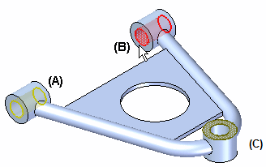

Creating and using constraints
Using constraints
An analysis study requires that at least one constraint be defined to restrict translational and rotational motion of the model at specific locations. For example, you might select geometric entities which are bolted or fastened to other components in an assembly, such as faces (A) and (B). You can place a constraint on the same face where you have defined a load (C), but the loads applied to that face are ignored during solution processing.

Solid Edge Simulation provides a variety of geometry-based types of constraints.
Constraints are set-based, making it possible to categorize them into different cases for different analyses or to combine them into a single analysis of a model. For example, a linear static study of a wall-mounted pressurized container with nozzle connections to other pipes might include the following constraints:
-
Fixed wall mounts
-
No rotation between the nozzle connections and external pipes
These constraints can be solved at the same time.
Defining constraints
You apply constraints to geometry—points, edges, surfaces—using the commands in the Constraints group on the Simulation tab. You also can define constraints from the shortcut menu in the Simulation tree-view pane. These commands are available when a study is active and you have selected geometry.

The Constraints group for the beam mesh type does not include the Sliding Along Surfaceconstraint command or the Cylindrical constraint command.
A constraint degree of freedom (DOF) symbol is displayed on the selected geometric entities to mark them as constrained. You also have the option of displaying a degrees of freedom label with the constraint.
Constraint degrees of freedom (DOF)
A freestanding physical body can move in three directions (X, Y, and Z) and rotate in three planes (XY, YZ, and XZ). In a model with a rectangular coordinate system, these motions are called degrees of freedom. If you are working in a cylindrical coordinate system, these are called cylindrical degrees of freedom (DOF).
-
Constraint degrees of freedom are labeled with respect to the coordinate system. Refer to these tables and examples to learn how to interpret the labels:
Constraint DOF symbols
Constraint symbols are displayed on the model when you define a constraint.
-
Constraint symbols indicate the degrees of freedom (DOF).
-
The constraint symbol arrows point in the directions that are free.
Most constraints apply predefined degrees of freedom. However, two types of constraints—cylindrical and user-defined—let you choose the degrees of freedom you want to allow or restrict. The constraint symbols displayed on the model update according to the degrees of freedom you assign.
To learn more: Constraint symbols.
Selecting existing constraints
You can double-click a constraint name in the Simulation pane to edit it directly.
You also can select an existing constraint by first selecting the constraint symbol in the graphics window, and then selecting its edit definition handle.

This displays the Constraints command bar with edit options for the selected constraint.

If the constraint symbols are not visible or if there are multiple constraints, you can first expand the Constraints group in the Simulation pane, and then select the constraint by name. This highlights the symbols associated with that constraint in the graphics window.
How do I
Define a constraintActivity: Apply a fixed constraint
Activity: Apply pinned and no rotation constraints
Activity: Apply a sliding along surface constraint
Activity: Apply a user defined constraint
Edit a constraint
Learn more
ConstraintsConstraint symbols
Constraint labels